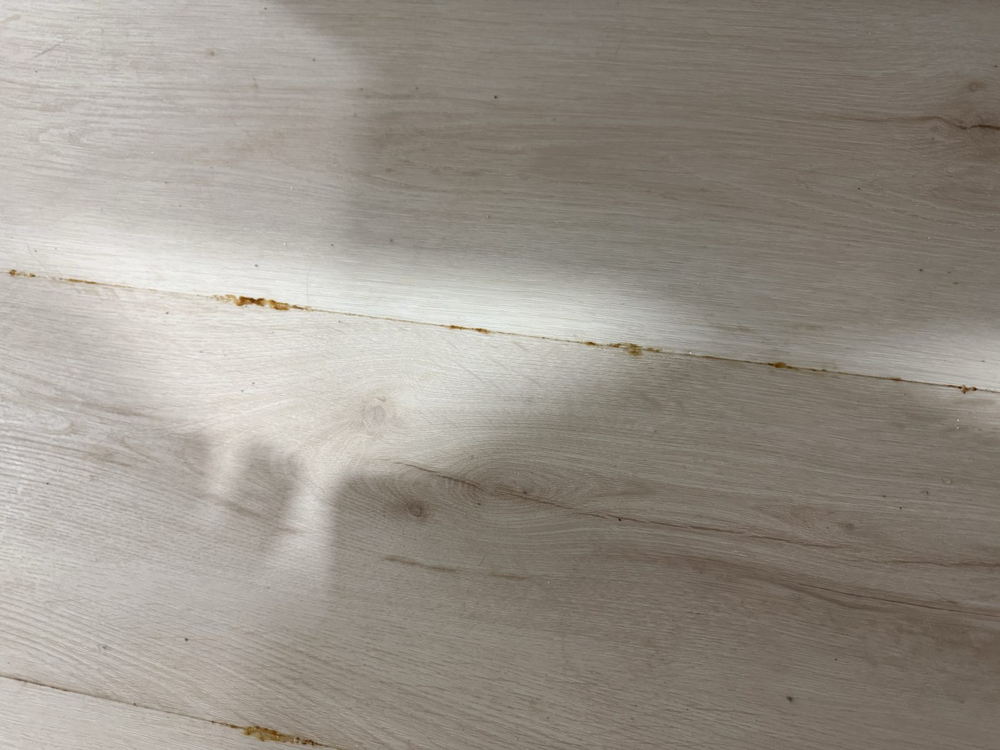
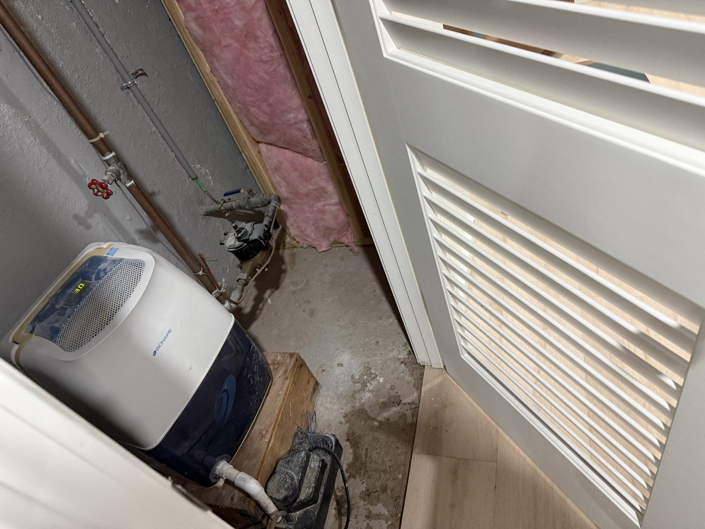
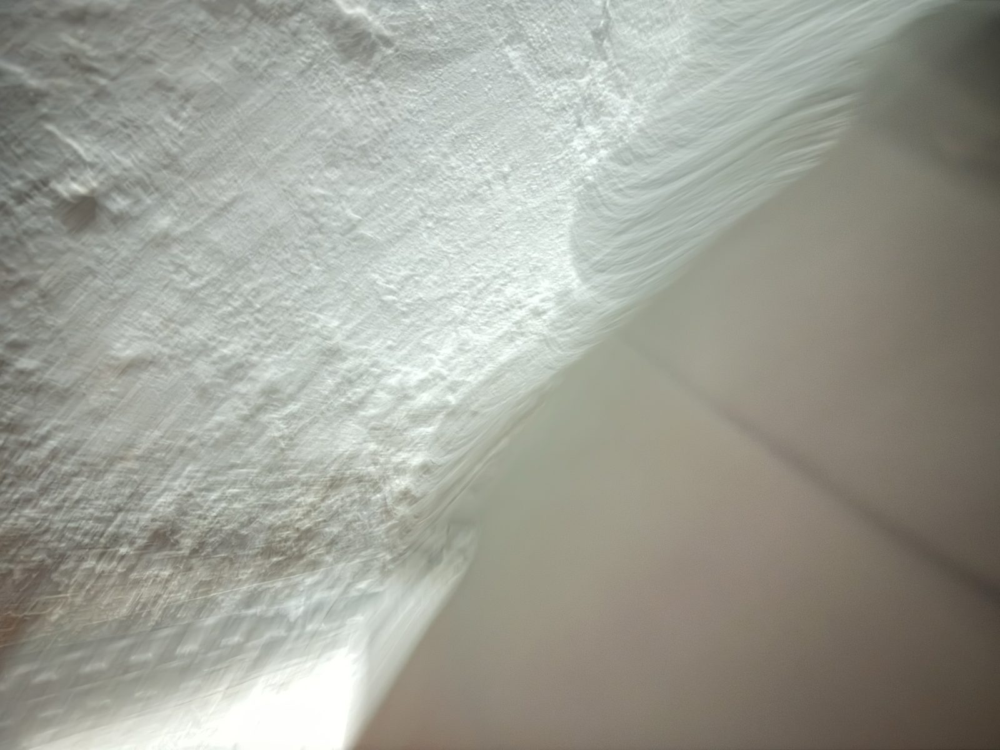

A finished basement in the Farmington River valley. A sump pump that ran constantly all spring without a drop of flooding. And now, in midsummer, rust-orange water oozing up between the seams of brand-new glued-down flooring while the pit sits quiet. Six research agents investigated. Here's the answer — and the plan.
🔧 Skip to the fix: vetted contractor shortlist & checklist →
Four case facts, and three photographs. Any explanation has to account for all of them at once.



Weatogue sits on the Farmington River floodplain over roughly 90 feet of transmissive glacial outwash sand and gravel — a naturally shallow, fast-responding water table hydraulically tied to the river, in a documented chronic basement-water zone. Then July 2026 happened: four separate multi-inch rain events, capped by a major storm days before the water appeared.
Two timing facts matter. First, summer water tables normally fall — evapotranspiration eats summer rain — so a groundwater surge in August is unusual and points squarely at the July storms rather than a lingering wet spring. Second, sub-slab water appearing 1–3 days after peak rainfall is exactly what the river's recession curve predicts for a house on this aquifer: the water arrives late, and it leaves slowly.
The research team evaluated every mechanism that can put liquid water under a glued floor while a sump pit stays dry, then a lead investigator adversarially weighed them against the case facts. Percentages are the estimated chance each mechanism is a meaningful contributor (they overlap). The original synthesis ranked iron-ochre collection failure #1 — then same-day field testing (fresh drilled holes staying dry) and the discovery of the rusty hatchway upslope produced a new co-leading hypothesis, added below.
The steel bulkhead is rusted essentially all the way around, with holes open to daylight — in a 4-inch storm it admits water like an open window, straight into a stairwell that has no drain at its base and was still damp days after the last rain. The stairwell fills like a bathtub, then discharges slowly for days under the door and across the slab surface under the glued flooring, following the grade downhill to pool at the low point beside the pit — on top of the slab, where no sump hole at any depth can ever intercept it. That explains the dry pit more cleanly than any sub-slab theory; the slow reservoir discharge explains the 1–3 day lag after rain; and rust shed by the corroded steel explains the orange tint of the seam ooze without needing iron bacteria (feel test: gelatinous slime = ochre; thin gritty stain = rust). At this level of corrosion the bulkhead is beyond caulk and gaskets — it needs replacement. Volume check — is 25 ft plausible? Easily. The July 28–29 storm alone dropped ~80 gallons of direct rainfall on a ~30 sq ft bulkhead footprint (4.3″ × 30 sq ft), while wetting the entire 25-ft × ~8-ft trail as a 1/16″ film under the flooring takes only ~8 gallons — one storm supplies 5–10× what the whole path requires, with tens of gallons left over to form the standing pool at the low corner. Distance is no obstacle either: a waterproof floor over smooth concrete is effectively a sealed, tilted channel (even 1/8″/ft of grade is a 3″ drop over 25 ft), which is why restorers routinely find water rooms away from its source under floating vinyl. And the observed gradient — hatchway end now dry, sump end still expressing — is exactly what a drained flow path with a terminal pool looks like days after rain; ground-sourced water at the sump corner would leave no reason for a continuous seam-stain trail leading back to the hatchway door.
The sump pit only sees the water its collection system delivers. If the perimeter drain tile, gravel bed, or pit inlets are fouled — and iron ochre, the orange bacterial slime visible in the seam photo, is Connecticut's classic fouling agent — groundwater perches inches under the slab while the pit reads dry. The water then exits at the weakest slab penetration: the cut-and-patch ring around the sump basin itself, which is exactly where the wet zone is anchored. Before the hatchway emerged, this was the only single mechanism that explained all four original case facts at once. The spring's constant-run season moved months of silt- and iron-laden Farmington Valley groundwater through the system at maximum flow — precisely the loading that accelerates ochre fouling, and "a few years old" is the classic timeframe for it to bite. The basin itself strengthens this diagnosis: it is a drilled black barrel — a pit-only install with no drain tile — so its entire collection capacity is a set of small field-drilled holes, the geometry most easily blinded by ochre gel and silt. There is no perimeter tile to intercept water elsewhere in the room, which is also why the working system's protection never extended reliably beyond the pit's local drawdown radius.
A slab bottoms out about 4 inches down; a typical pit float doesn't trigger until water is 18–24 inches down. Water can stand anywhere in that window — wetting the slab from below, feeding hydrostatic pressure through cracks — while the pit level "looks fine" to the eye. The capillary fringe in fine alluvial silt adds another foot of effective wetting above the free water surface. With USGS gauge data proving the valley system was still elevated on August 1, this is likely operating alongside cause #1: the water is high and the tile isn't intercepting it.
Geometrically the best match of all: the discharge line exits at the sump corner, and a broken buried line, a termination too close to the foundation, or a failed check valve injects every pumped gallon right back into the soil beside the footing where the wet zone starts. During spring's constant running, even a partial leak moved thousands of gallons into that pocket. The pump cycles rarely now, so this fits better as what pre-saturated the corner than as the sole ongoing source — but it's a free 15-minute test and must be checked before any expensive drain work.
The rain correlation is the disqualifier — pressurized supply leaks and condensate lines don't respond to storms. But it stays on the list because it's August, the AC is running hard in 66°F-dew-point air (5–20+ gallons of condensate a day is possible), condensate lines are often routed toward the sump pit — through the wet corner — and a supply leak is the one candidate that gets more expensive every week it's ignored. A water-meter dial test and a $2 dye tablet settle it.
Honest physics: even extreme vapor emission (~10 lb/1,000 sq ft/day) is roughly half a liter per day over the wet zone — enough to destroy adhesive and feed mold over months, but an order of magnitude short of squeegee-able pooled water appearing days after a storm. This mechanism is not the acute source. It is, however, why the failure is so visible: the glued flooring is an impermeable lid that converts moisture which would once have harmlessly evaporated into liquid accumulating at the bond line — and it guarantees the same failure repeats with any glue-down replacement. It also rules out one folk theory: humid August room air is not the source, because there is no air gap under glued flooring for room air to condense in.
A cross-section of what the evidence says is happening under the floor. Water arrives from the still-elevated valley water table, can't get into the pit because the collection path is fouled, perches against the slab underside, and exits through the patched ring around the basin — straight into the one place it can't evaporate: under a glued, vapor-tight floor.
Under $50 and one weekend of mostly-passive testing discriminates among all five causes before any contractor money is spent. Do them in this order — each one either redirects or de-risks the next.
Inspection results (Aug 1): the bulkhead is rusted through with daylight visible, there is no drain at the base of the steps, and the base was still damp days after the rain — the stairwell is a holding tank fed through the rust holes, with the gap under the door as its main outlet. Remaining confirmation (optional but cheap): from the basement side, inspect the interior threshold/sill for rust-stained wicking and whether the discolored tile seams begin there; once dry, a 10–15 minute hose test on the covered vs. uncovered bulkhead makes it formal. Urgent regardless: tarp or cover the bulkhead before the next rain ($20 tarp / $50–150 weather cover) and extend any nearby downspout.
Unplug the pump. Measure standing water depth with a tape — don't eyeball it. Look for orange-brown gelatinous slime on the pump, float, basin walls, and especially at inlet pipe openings. Note whether perforated drain-tile inlets actually enter the basin, and the float trigger height. Photograph everything.
Turn off every fixture and appliance, photograph the meter's low-flow indicator, wait 1–2 hours, re-check. If it moved, close the main house valve and repeat to separate house-side from street-side.
Pour two or three 5-gallon buckets into the pit to force pump cycles while a second person outside confirms full, steady flow exits the discharge 10+ feet from the foundation. After shutoff, listen for trickle-back (failed check valve). Drop food dye in the pit before cycling; walk the discharge route looking for soggy soil or ochre staining near the sump corner.
Put food dye in the AC drain pan or condensate pump reservoir; watch 24–48 hours for dye under the floor or in the pit. Also inspect expressed floor water: clear and cool suggests supply/condensate; silty orange suggests groundwater.
Masonry bit, through the slab. Watch whether water rises into the hole and stands; compare its level to the pit level from test 1. Foam-plug it afterward — it doubles as an observation port through the next rain.
The wet zone is already a loss (see verdict below), so this costs nothing you weren't losing. Observe water quantity, clarity, temperature; ochre staining on the slab; adhesive condition (re-emulsified goo vs. intact); any mold. Trapped water finally starts drying.
Tape a 2×2 ft clear poly square airtight to bare slab; read at 24–72 hours. Condensation under the sheet = slab-sourced moisture; on top = interior air. During the next real rain, mark the pit level hourly while checking whether the floor wet zone grows.
Only after the free tests point at collection failure — and only if inlet pipes exist. With a drilled-barrel, pit-only basin (this case), there is likely no tile to scope: the "restore" path is instead cleaning or replacing the barrel — scrub and re-drill or ream the holes, or swap in a manufactured slotted basin set in washed stone — while the "systemic" path is adding real perimeter collection (Tier 3). A waterproofing contractor with iron-ochre experience can advise which; get the free tests done first so the visit starts from evidence.
Sequenced so every dollar is spent on a confirmed problem, not a guess. Fix the collection failure first — every dollar spent on flooring before the water path is fixed is spent twice.
The wet-zone flooring is already lost. Pull planks from the sump corner past the last wet seam plus 2 ft, verified with a cheap moisture meter. Scrape adhesive ridges so the slab can dry. Photograph and date everything first — for insurance documentation and any installer claim. Assume mold under planks wet more than a few days: wear a respirator, bag debris.
50-pint ENERGY STAR dehumidifier (drain hose to the sump pit) set to 45–50% RH, plus a box fan across the slab, continuously. At a 66°F outdoor dew point, ventilating adds water to a cool slab. Mold germinates above 60% RH.
Pit inspection, meter dial test, bucket + discharge + dye, condensate dye, test hole, plastic sheet, rain-event pit log. One weekend, under $50, discriminates among all candidate causes before any contractor is called.
A tarp bungeed over the doors — or a purpose-made bulkhead weather cover — stops the stairwell reservoir from filling through the rust holes. This is the single highest-leverage dollar in the whole plan given the Aug 1 findings: if the floor stays dry through the next covered rain, the diagnosis is confirmed by intervention.
During the next rain: gutters overflowing? Downspouts dumping near the wet corner? Grade sloping toward the house? Downspout extensions are the cheapest possible fix in this entire plan.
Costs nothing, starts the clock. Ask for ASTM F2170 or F1869 test documentation for the below-grade slab prior to glue-down installation, and check the contract's site-condition language. See the flooring verdict for the strength and limits of this claim.
The highest-value contractor spend if tests point at collection failure (the expected outcome). Hot-water flushing clears fluid-stage ochre; hardened ochre means tile replacement. Hire a waterproofing contractor with explicit iron-ochre experience — ochre recurs, and the rebuilt system should be maintenance-cleanable.
Float adjustment $0–300 (caveat: if ochre is confirmed, keeping the pump submerged suppresses the bacteria — don't aggressively lower the float without a plan). Deeper basin swap up to ~$1,000. Broken buried discharge: surface extension $10–50; buried replacement to daylight $2,200–3,300. Check valve ~$20–100.
Rusted to daylight is beyond caulk and gaskets — replace with a properly sized, gasketed steel bulkhead unit, flange-sealed to the foundation. Have the installer check the concrete surround and the sill joint while it's open, seal the interior sill-to-slab joint with hydraulic cement once dry, and consider whether the excavation makes adding a stairwell drain worthwhile (often unnecessary with a good gasketed unit plus a cover). This is now the primary repair of the water path.
Spring 2026 proved this pump runs constantly in heavy rain. A power outage during one of those storms floods the finished basement. Non-negotiable given the investment upstairs of the slab.
The current damage — groundwater seepage through the slab — is excluded from standard HO-3 policies and almost certainly not claimable; don't burn time on a claim likely to be denied. But the rider ($50–250/yr, $5k+ limits) covers the pump-failure scenario going forward. Keep the Tier-1 photo documentation either way.
Only if scoping shows an intact system genuinely overwhelmed by the water table, or a dead system needing replacement. Hartford-area pricing: $50–60 per linear foot — roughly $5,000–6,000 for a ~100 LF full perimeter, or $1,800–2,800 for a 30–40 LF wet-side partial run. Specify an ochre-rated system (WaterGuard IOS class) given the valley's iron chemistry.
100%-RH-rated epoxy moisture-vapor-barrier primer, $1.50–3.50/sq ft. These are rated for vapor, not standing water — drainage must control liquid water first. Precondition for any new flooring: slab passes ASTM F2170 in-situ RH probes (<75–80%) after water control is in, verified through one heavy rain. Numbers from a dry week are not the design condition.
Best fits: floating rigid-core SPC plank (from ~$3.75/sq ft material) over a dimple-mat subfloor (Delta-FL / DRIcore class, $2.50–9/sq ft installed) that lets incidental water drain toward the sump — or porcelain tile on uncoupling membrane ($6–16/sq ft) / sealed concrete ($3–12/sq ft) for maximum immunity in at least the sump-corner zone. Never install on this slab: glue-down anything, laminate, solid wood, or carpet.
Liquid water between slab and adhesive exceeds the moisture rating of every flooring adhesive made (limits run ~75–80% slab RH / 3–8 lb MVER — pooled water is effectively 100% RH plus hydrostatic wetting), and acrylic adhesives re-emulsify into goo under sustained wet, alkaline exposure. If the product is true laminate (HDF wood core), the core swelled irreversibly within hours of first wetting. If — more likely for a glue-down product — it's luxury vinyl plank, the vinyl itself shrugs off water but the planks are destroyed during removal from failed adhesive and can't be re-glued. Either way, the IICRC S500 water-damage standard requires lifting non-porous flooring after water intrusion because the slab cannot dry in place.
Assume mold. The 24–48-hour colonization window is long past — this water has plausibly been present since spring. That converts the job from "flooring repair" to "water-damage remediation": tear out the wet zone plus a 2-ft moisture-meter-verified margin, scrape all adhesive, clean and treat the slab, dry with instruments verifying, and check adjacent baseboards and drywall bottom plates. Dry-zone flooring beyond the margin can stay for now — but it is living on borrowed time over an unmitigated below-grade slab.
On the installer: ASTM F710 requires moisture testing of ALL concrete slabs before resilient flooring; below-grade slabs are flagged highest-risk in every industry guideline; and this house had a visible sump pump — a known water history. If the installer glued down flooring with no documented F2170/F1869 testing, that deviates from the ASTM-referenced standard and near-universal manufacturer instructions, and voids the product warranty — a real workmanship claim. Honest caveats: F710 doesn't assign who performs the test, so the installer may argue the owner/GC owned it, and the underlying water condition belongs to the house, not the installer. Realistic outcome of a written demand for their test records (with Connecticut Home Improvement Act leverage and the Guaranty Fund if they're registered): a negotiated contribution toward re-flooring — not full remediation costs. Send the letter; it's free. Don't budget around it.
Researched and verified August 1, 2026 (live websites, BBB, Angi/Google review listings — details may change; confirm by phone). Connecticut has an unusually deep bench of true bulkhead specialists — Bilco itself is headquartered in New Haven. Planning range for a steel bulkhead replacement with sealing and minor concrete repair in Hartford County: roughly $2,500–6,000 installed (heavy masonry rebuilds can push $5,000–10,000). All companies below offer free estimates.
Pure cellar-door specialist, closest to Simsbury. Installs both Bilco and Gordon units and explicitly offers concrete repair — a direct match for a rusted-through door with a deteriorated surround. Cleanest review record of the specialists (Angi 4.9, BBB accredited 12 years).
Vetting (Aug 1, 2026): HIC 0635611 verified Active against the state license roster (expires 3/31/2027, name matches) · LLC active with CT Secretary of the State (formed 2018, veteran-owned) · BBB A+, zero complaints on file · no litigation or DCP action found · no negative-review pattern anywhere. Notes: review volume is modest and mostly pre-2024; have the contract written to "Gibson Cellar Door LLC" (BBB stale-lists them as a sole proprietorship); request a certificate of insurance.
Family exterior-remodeling firm with a dedicated bulkhead line advertising exactly this job: replacement + sealing/waterproofing + concrete curb and masonry repair, one-day installs.
Vetting (Aug 1, 2026): HIC 0614190 verified Active (expires 3/31/2027, exact name match) · corporation active, family officers (Joseph, Faith, Leann Tonnotti) verified in state records · BBB A+, zero complaints in 3 years · ~570 reviews at 4.7 with late-2025 recency · ~600 permitted projects on record (they routinely pull permits) · no litigation found. Notes: "since 1979" is company-claimed (state records trace to a 1999 LLC); bulkheads are a smaller line than windows/roofing for them — ask for a bulkhead-specific reference and which brand (Bilco/Gordon) they install.
Waterproofer with an explicit hatchway/bulkhead door service (Bilco piston-lift and Gordon), in-house masonry, and a dedicated Simsbury service page. Useful second angle: they install grate drains at the base of hatchway stairs tied to a sump — relevant to this drainless stairwell.
Vetting (Aug 1, 2026): HIC 0647875 verified Active (expires 3/31/2027, exact name/address match) · LLC active · zero complaints, no litigation or DCP action found · reviews show good 2025–2026 recency. Notes: the LLC dates to 2017 — the "30+ years" is owner Rocco Balesano's personal history (his registrations do trace to the 1990s) · two predecessor entities were forfeited for unfiled annual reports · BBB file only opened May 2025 · independent review corroboration is thinner than their site widget suggests. Their advertised lifetime warranty is only as durable as the 2017 LLC — get its exact terms in writing.
The state's highest-volume bulkhead specialist; every install includes masonry work, foundation plates, and disposal.
Vetting (Aug 1, 2026): HIC 0644013 verified Active (expires 3/31/2027) · LLC active since 2003 · BBB A+ accredited since 2008 with only 1 complaint in 3 years against high volume (4.6 over ~265 reviews). The characterized risk: when things go wrong, the pattern across a decade is post-deposit delays with vague timelines and subcontracted finish-work quality (including an unresolved Aug 2024 review). Mitigations: ask whether employees or subs do the install, get the delivery window and start/completion dates in the contract before paying a deposit, and confirm they pull the permit and schedule final inspection.
Strong reviews (Google 4.7, 350+), explicit Bilco/hatchway replacement line with rusted-door case studies, and bundles drainage/foundation work if wanted. CT HIC 616126 (claimed — light vetting only; run it at elicense.ct.gov if you shortlist them).
Vetting caught a real issue here (Aug 1, 2026): the advertised Simsbury LLC was dissolved in April 2020 and its license (HIC 0578181) is long expired — yet the website, BBB page, and Houzz still market that dead entity. A successor, "Accent Windows and Doors CT LLC" (Bloomfield, principal David Lingenheld — not founder Doug Hauser), is active with a valid HIC 0663696 (expires 3/31/2027) and demonstrably still working (Simsbury permits pulled in 2025). But its permit history is all windows and siding — no bulkhead work — no consumer reviews since ~2017 have surfaced, and the ownership change is publicly unexplained. If you call: confirm they even do steel bulkheads, that the contract names the successor LLC with HIC 0663696 (a contract with the dissolved entity would void your Guaranty Fund protection), and who actually installs.
Before signing: verify the contractor's CT Home Improvement (HIC) registration is Active at elicense.ct.gov under the exact business name on the contract — registration is what gives you access to CT's Home Improvement Guaranty Fund if a contractor defaults (recovery is capped; DCP has cited $15,000–$25,000 per contract depending on date — see the DCP Guaranty Fund page). The Aug 1, 2026 vetting above already confirmed Active registrations for Gibson (HIC 0635611), Tonnotti (HIC 0614190), Dino & Rocco's (HIC 0647875), and CT Cellar Doors (HIC 0644013) via the state's open-data license roster; re-run them at signing time. CT law requires a written contract with start and completion dates and a 3-business-day cancellation right; expect a modest deposit with balance on completion, never cash-only.
A proper install includes: on-site measurement of the opening (not "standard size, we'll shim it"); removal/disposal of the rusted unit; inspection and repair of the spalled concrete surround before the new unit goes on; flanges bedded in polyurethane sealant and fastened to sound concrete; interior sill sealed; grade sloped away; and a factory-finished steel or HDPE unit with field cuts touched up so this rust failure doesn't repeat.
Three questions for every bidder: (1) "The concrete is deteriorated in places — do you rebuild the surround yourselves, and is it in this price or a change order?" (2) "Is the unit gasketed/weathertight, and how do you seal the flange-to-foundation joint — what happens if it leaks next spring?" (3) "What's your labor warranty in writing, separate from the manufacturer's unit warranty, and does it cover leaks at the flanges?"
Five research agents ran 63 web lookups in parallel (local hydrology · differential diagnosis · sump systems · flooring forensics · remediation & costs), then a lead investigator adversarially synthesized their findings against the case facts. Selected key sources below; full source list in the repository.